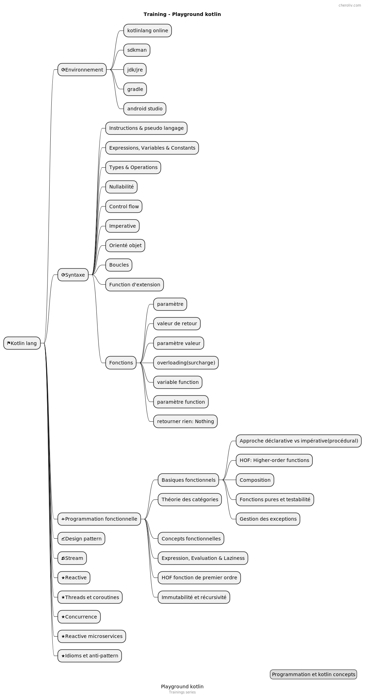

トレーニング - コトリン
公開日: 12 May 2022
マインドマップ

関数型プログラミング
演�習は本から取り出されています:
チュートリアルによる Kotlin での関数型プログラミング
Massimo Carli によって書かれました
リポジトリ: https://github.com/kodecocodes/fpk-materials
構文
最初のプログラムテスト
概念: 画面表示, 機能
FirstProgramTest:https://github.com/cheroliv/cheroliv.com/blob/master/codes/src/test/kotlin/programming/FirstProgramTest.kt[ソース]+
連結関数テスト
概念: メモリー, 変数, 値, オブジェクト, 関数拡張
ExampleUnitTest: 源+
BirthdayMessageTestOutput
概念: 集合, ループ
Kotlinの紹介
�誕生日メッセージテスト出力:https://github.com/cheroliv/cheroliv.com/blob/master/codes/src/test/kotlin/programming/BirthdayMessageTestOutput.kt[ソース]+
コトリンコース
基本的な機能
宣言型 X 命令型アプローチ
package functional
import kotlin.test.Test
import kotlin.test.assertEquals
class DeclarativeTests {
val input = listOf(
"123", "abc", "1ds", "987", "abdf", "1d3", "de1", "88", "101"
)
fun imperativeSum(list: List<String>): Int {
var sum = 0
for (item in list) {
try {
sum += item.toInt()
} catch (_: NumberFormatException) {
}
}
return sum
}
@Test
fun `test imperative approach`() {
imperativeSum(input).run {
println("Sum $this")
assertEquals(1299, this)
}
}
fun isValidNumber(s: String) = try {
s.toInt()
true
} catch (_: NumberFormatException) {
false
}
fun declarativeSum(list: List<String>) = list
.filter(::isValidNumber)
.map(String::toInt)
.sum()
@Test
fun `test declarative approach`() {
assertEquals(1299, declarativeSum(input).apply {
println("Sum $this")
})
}
}演習 1.1
関数 sumInRange を実装し、範囲内の値を加算します
与えられた区間の List<String> 。シグニチャは：
fun sumInRange(input: List<String>, range: IntRange): Int@Test
fun `Exercise 1_1`() {
assertEquals(4, sumInRange(
listOf("1", "10", "a", "7", "ad2", "3"),
1..5
).apply { println("sumInRange 1..5: $this") }
)
}お試しください、そしてあなたの答えをそれに合わせて確認してくださいhttps://github.com/cheroliv/cheroliv.com/blob/master/codes/src/test/kotlin/functional/DeclarativeTests.kt[ソリューション, windows="_blank]。
高階関数
package functional
import java.io.ByteArrayOutputStream
import java.io.PrintStream
import java.lang.System.*
import java.lang.Thread.sleep
import kotlin.math.sign
import kotlin.test.Test
import kotlin.test.assertEquals
class BasicsHOFTests {
val ONE_SECOND = 1000L
@Test
fun `high order function`() {
//capture de la sortie standard
val standardOut: PrintStream? = out
val outputStreamCaptor = ByteArrayOutputStream()
setOut(PrintStream(outputStreamCaptor))
3.times { println("Hello") }
assertEquals(
buildString {
repeat(3) { append("Hello\n") }
deleteAt(length - 1)
}, outputStreamCaptor
.toString()
.trim()
)
//libération de la sortie standard
setOut(standardOut)
}
fun Int.times1(fn: () -> Unit) {
for (i in 1..this) {
fn()
}
}
fun Int.times2(fn: () -> Unit) {
for (i in 1..this) fn()
}
fun Int.times3(fn: () -> Unit) =
(1..this).forEach { fn() }
fun Int.times4(fn: () -> Unit) =
repeat((1..this).count()) { fn() }
fun Int.times(fn: () -> Unit) =
(1..this).forEach { _ -> fn() }
}演習 1.2
chrono を実装し、型の関数を受け取る`() →`
ユニットを入力として、実行にかかった時間を返します。シグニチャは:+
fun chrono(fn : () -> Unité) : Long@Test
fun `Exercise 1_2`() {
val waitOneSec = { sleep(ONE_SECOND) }
chrono(waitOneSec).apply {
println("chrono: $this")
assertEquals(1, sign)
}
}試してみて、それに合わせてあなたの答えを確認してhttps://github.com/cheroliv/cheroliv.com/blob/master/codes/src/test/kotlin/functional/BasicsHOFTests.kt[解決策, windows="_blank].
構成
package functional
import kotlin.test.Test
import kotlin.test.assertEquals
fun double(x: Int): Int = 2 * x
fun square(x: Int): Int = x * x
fun squareAndDouble1(x: Int) = double(square(x))
infix fun <A, B, C> ((A) -> B).compose(g: (B) -> C)
: (A) -> C = { a -> g(this(a)) }
class CompositionTests {
@Test
fun composition_impure() {
assertEquals(200, double(square(10)))
assertEquals(200, squareAndDouble1(10))
}
@Test
fun composition_pure() {
val squareAndDouble = ::square compose ::double
assertEquals(200, squareAndDouble(10))
}
}純粋関数とテスト容易性
package functional
import java.io.ByteArrayOutputStream
import java.io.PrintStream
import java.lang.System.out
import java.lang.System.setOut
import kotlin.test.Test
import kotlin.test.assertEquals
var count = 0
//impure car une variable global subit un effet de bord
fun impure(value: Int): Int {
count++
return value + count
}
//impure car utilisation de la sortie standard qui fait muter le system
fun addOneAndLog(x: Int): Int {
val result = x + 1
println("New Value is $result")
return result
}
//pure
fun addOne(x: Int) = (x + 1).run {
Pair(this, "New Value is $this")
}
class PureTests {
@Test
fun `impure fonction`() {
assertEquals(3, impure(2))
val standardOut = out
val outputStreamCaptor = ByteArrayOutputStream()
setOut(PrintStream(outputStreamCaptor))
addOneAndLog(3)
assertEquals(
"New Value is 4",
outputStreamCaptor
.toString()
.trim()
)
setOut(standardOut)
}
@Test
fun `pure fonction`() {
addOne(3).run {
assertEquals(4, first)
assertEquals("New Value is 4", second)
}
}
}例外処理
package functional
import org.junit.jupiter.api.assertThrows
import kotlin.Result.Companion.failure
import kotlin.Result.Companion.success
import kotlin.test.Test
import kotlin.test.assertEquals
//NumberFormatException est un effet de bord qui rend la fonction impure
fun strToInt(str: String) = str.toInt()
//pure
fun strToIntOrNull(str: String) = try {
str.toInt()
} catch (nfe: NumberFormatException) {
null
}
//pure avec gestion de l'exception plus élégante
fun strToIntResult(str: String): Result<Int> =
try {
success(str.toInt())
} catch (nfe: NumberFormatException) {
failure(nfe)
}
class ExceptionHandlingTests {
@Test
fun impure() {
assertThrows<NumberFormatException> { strToInt("foo") }
assertEquals(1, strToInt("1"))
}
@Test
fun pure() {
assertEquals(null, strToIntOrNull("foo"))
assertEquals(1, strToIntOrNull("1"))
}
@Test
fun `pure avec result`() {
assertEquals(1, strToIntResult("1").getOrNull())
assertEquals(
"For input string: \"foo\"",
strToIntResult("foo")
.exceptionOrNull()
?.message
)
}
}重要なポイント
-
オブジェクト指向プログラミングは、オブジェクトを使ってプログラミングすることを意味します。
関数型プログラミングは、関数を使ってプログラムを書くことを意味します。 問題をいくつかのサブ問題に分解し、それらをモデル化します 機能。
-
高階関数は他の関数を入力として受け取るか、他のを返します。
返り値として機能します。 カテゴリ理論は合成の理論であり、あなたはそれを理解するために使います。 作業プログラムで関数をどのように組み立てますか。 純粋な関数の出力値は、その入力パラメータにのみ依存し、それは 副作用はありません。
-
副作用は、関数が外部世界に行う何かです。
標準出力にログを出力するか、グローバル変数の値を変更する可能性があります。 関数型プログラミングは純粋な関数に対して機能します。しかし、それはまたを提供します 不純な関数を純粋な関数に変換するツール 副作用を移動させることで、不純な関数を純粋にすることができます 戻り値の一部。
-
関数型プログラミングは、組み合わせに関するものです。
エラー処理は副作用の典型的なケースであり、Kotlinはツールを提供します それらを機能的に管理するために。
Java 8を深く学ぶ: ラムダ式と関数型インターフェース
�圏論
数学的カテゴリー理論:
関数の基礎
問題 2.1
一意な値にマッピングする関数の例を書くことができますか？
ドメインが範囲内で一意でない値を持つ場合、例えば以下の図の f(b) と f(c) のように？
やってみて、その後、チャレンジプロジェクトの解答を確認して、自分がどうだったかを見てみよう。
アドバイスと説明は、リンクに従って先へ進むと見つかります。 解決策.
演習 2.2
２倍の関数の逆関数を書くことができますか？
逆関数の定義域と値域は何ですか？
解答については、チャレンジプロジェクトと付録Bを参照してください。
fun chrono(fn : () -> Unité) : Long@Test
fun `Exercise 1_2`() {
val waitOneSec = { sleep(ONE_SECOND) }
chrono(waitOneSec).apply {
println("chrono: $this")
assertEquals(1, sign)
}
}試してみて、そしてそれによってあなたの答えを確認してhttps://github.com/cheroliv/cheroliv.com/blob/master/codes/src/test/kotlin/functional/BasicsHOFTests.kt[解決策, windows="_blank]。
関連記事
31 May 2026
14 May 2026